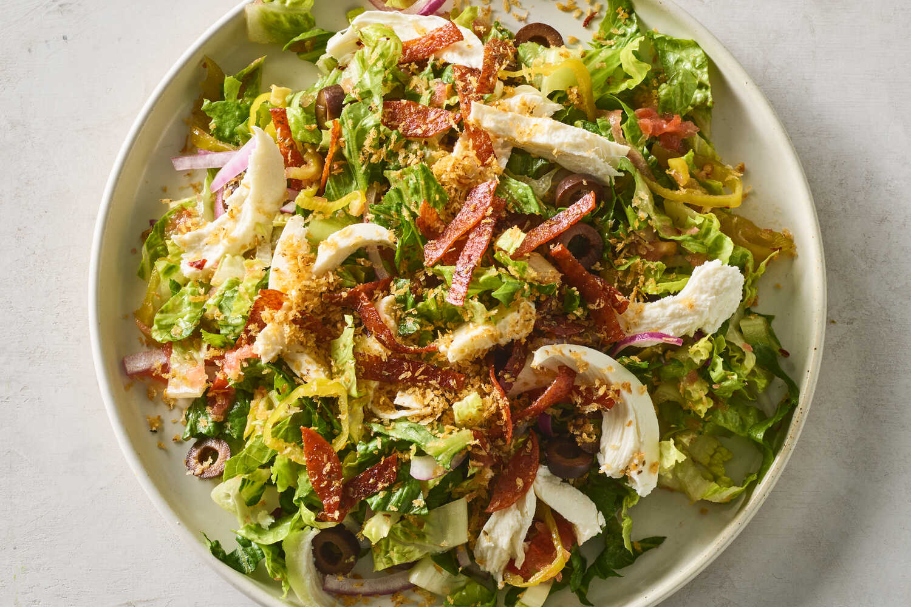

Pizza Salad

Description
For pizza in salad form, this recipe tosses a crisp and briny mix of romaine lettuce, pepperoncini, black
olives and red onion in a fresh, grated tomato vinaigrette. Spicy pepperoni strips are sizzled until crisp;
their zesty fat gets sopped up by toasty bread crumbs that are spiked with the classic New York slice
flavors (oregano, garlic and red-pepper flakes). (You can make a big batch of these crumbs, store them in
the fridge and use them to top pasta, eggs, roasted veggies and anything else you want to take to pizza
town.) This salad is showered with the salty pepperoni crumbs, offset by mozzarella morsels running
throughout.
Ingredients
- 4 tablespoons extra-virgin olive oil
- 2 ounces pepperoni slices (turkey or plant-based), cut into thin strips (see Tip below)
- ¾ cup panko bread crumbs
- 1 teaspoon garlic powder
- 2 teaspoons dried oregano
- Salt
- Red-pepper flakes
- 1 beefsteak tomato
- 1 tablespoon pepperoncini brine, plus more to taste
- Granulated sugar (if needed)
- 1 large head romaine lettuce, roughly chopped
- ⅓ cup sliced pepperoncini, drained
- ⅓ cup sliced black olives
- ¼ red onion, thinly sliced
- 4 ounces fresh mozzarella
Steps
- In a medium nonstick or well-seasoned cast-iron skillet, add 2 tablespoons olive oil and the pepperoni
and place over medium heat. Cook, stirring frequently, until the pepperoni is rendered and crisp, about
5 minutes. Remove from heat and use a slotted spoon to transfer the pepperoni to a plate.
-
Return the skillet with the fat to medium-low heat. Add the bread crumbs and cook, stirring frequently,
until browned and toasty, about 5 minutes. Remove from heat. Add the garlic powder, then the oregano,
crumbling it between your fingers as you sprinkle it over the mixture. Add the pepperoni bits, scraping
in any fat clinging to the plate, and stir until evenly combined. Season with salt and red-pepper flakes
to taste.
-
On the large holes of a box grater, grate the tomato into a large bowl, discarding the remaining skin.
Whisk in the pepperoncini brine and the remaining 2 tablespoons olive oil. Add salt, sugar and more
brine to taste. Add the romaine, pepperoncini, olives and red onion; toss to combine.
-
Divide the salad among plates, pouring over any dressing remaining in the bowl. Tear mozzarella and
divide over salad. Top with the pepperoni bread crumbs and serve right away.
Tip:
If using turkey pepperoni, increase the olive oil you use to cook the pepperoni to 3
tablespoons. If using a plant-based substitute, increase the initial oil to 4 tablespoons.
Go back to homepage